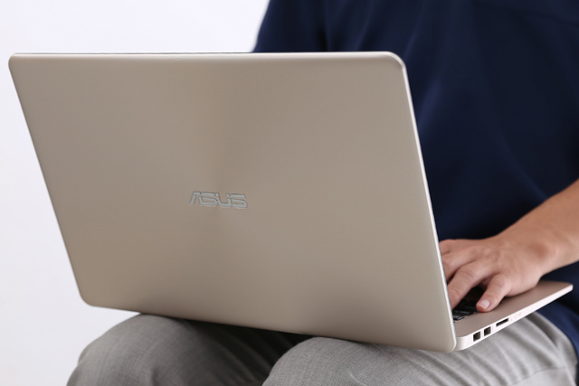
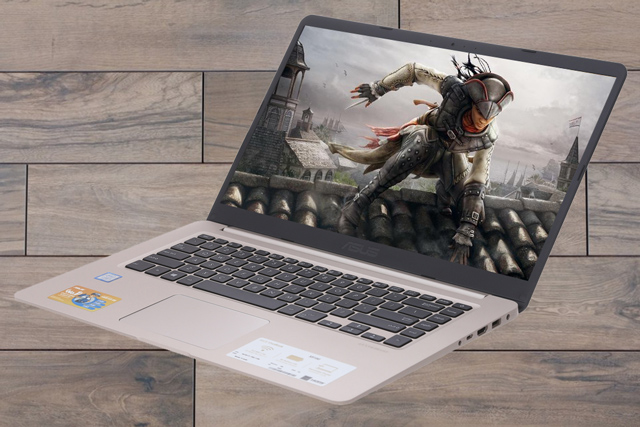

Asus X510UA (BR650T) có thiết kế với lớp vỏ nhựa, kèm họa tiết vân tròn đồng tâm giúp máy trở nên đẹp hơn, tinh tế hơn và hạn chế bám vân tay. Máy chỉ có trọng lượng khá nhẹ là 1.5 kg nên bạn có thể dễ dàng mang theo để sử dụng ở mọi lúc, mọi nơi.
Với chip Intel Core i3 Kabylake 2.4 GHz thế hệ 7 sẽ giúp máy hoạt động ổn định, tiết kiệm điện hơn so với đời chip Skylake. Máy còn được trang bị ổ cứng HDD 1 TB để thoái mái lưu trữ dữ liệu, cộng thêm RAM DDR4 4 GB đủ để chạy tốt các ứng dụng cơ bản.
Laptop Asus X510UA i3 7100U được trang bị đầy đủ các cổng kết nối truyền thống như: 2 x USB 2.0, USB 3.0, HDMI giúp việc sử dụng thuận tiện. Đặc biệt máy được trang bị một cổng USB Type- C cho phép tốc độ truyền tải dữ liệu rất nhanh.